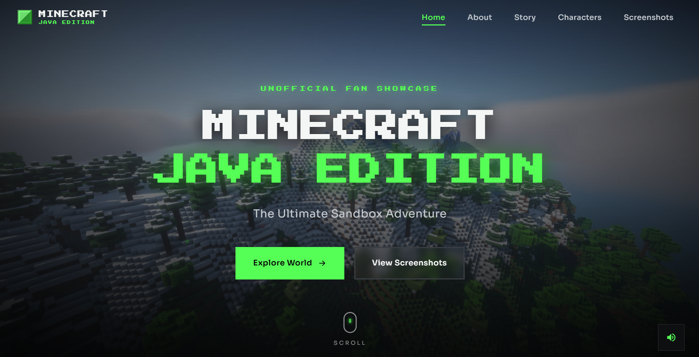
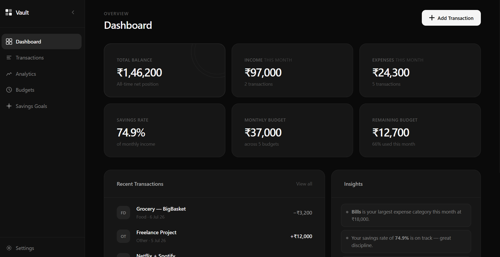
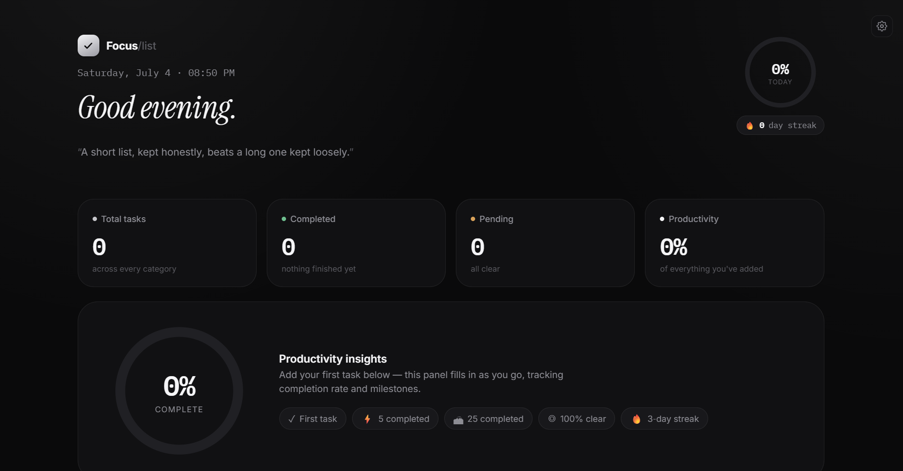

Available for select projects · India
Hi, I'm Saroon.
A High School Student from India, passionate about technology, UI/UX design, and backend development — building digital experiences and gaming on the side.
I spend most of my time at the intersection of design and engineering: figuring out how something should feel, then building the system that makes it real. Still early in the path — already thinking in products, not just projects.
About
A bit about how I got here.
I'm Saroon — seventeen, currently finishing school in India, and almost entirely self-taught in the parts of tech that actually interest me.
It started the usual way: small experiments, broken code, things that worked for reasons I didn't understand yet. Somewhere along the way it turned into a genuine pull toward two sides of the same problem — how an interface feels to use, and what's actually happening underneath it to make that possible.
These days that shows up as UI/UX design on one hand and backend development on the other, with full-stack work as the place they meet. I like systems that are quietly well-built — the kind where nothing flashy is happening, it just works, and that's exactly the point.
Outside of building things, I game with the same curiosity — paying attention to what makes an interface or a system genuinely satisfying to interact with, and quietly stealing those lessons for my own work.
I'm still early — by design. The plan is to keep building real things, get good at the craft underneath the trends, and eventually ship products that matter to the people using them. Long term, that's the whole ambition: not just to code, but to build things worth building.
Name
Saroon
Age
17
Location
India
Education
High School
Focus
Full-Stack & UI/UX
Status
Building & learning
Skills
What I build with.
Tools I reach for often enough that they've stopped feeling like tools — they're just how I think through a problem now.
Markup
HTML
Semantic, accessible structure — the foundation every interface is judged against before a single style is applied.
Styling
CSS
Layout systems, motion, and detail work — the difference between something that functions and something that feels considered.
Logic
JavaScript
From small interactions to full application logic — the layer that turns a static page into a product.
Design
UI Design
Visual systems, type hierarchy, and spacing — making interfaces that read clearly before they're even understood.
Research
UX Design
Understanding how people actually move through a product, then designing flows that get out of their way.
Selected Work
Things I've built.
A mix of personal projects and small experiments — some practical, some just for the craft of it.


Get in touch
Let's build
something worth building.
Open to interesting projects, collaborations, or just a conversation about design and code. Based in India — working with anyone, anywhere.